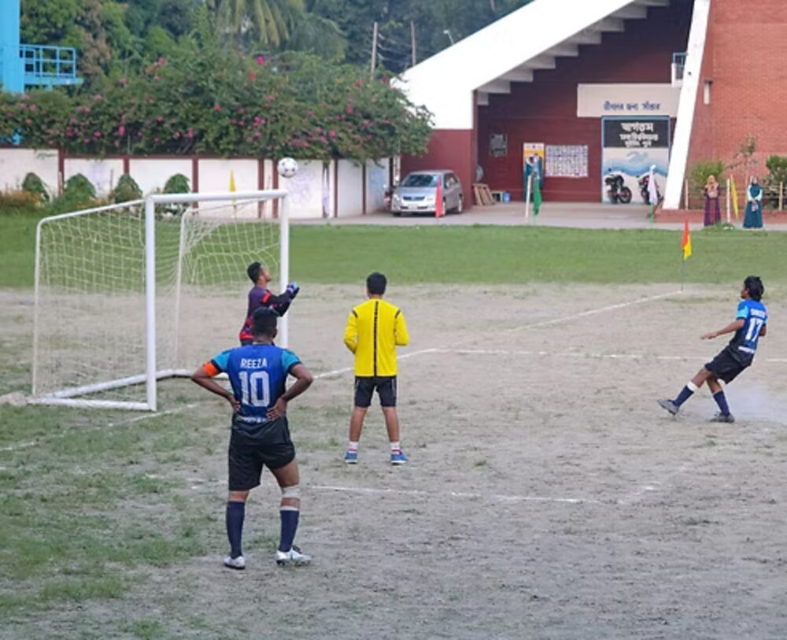
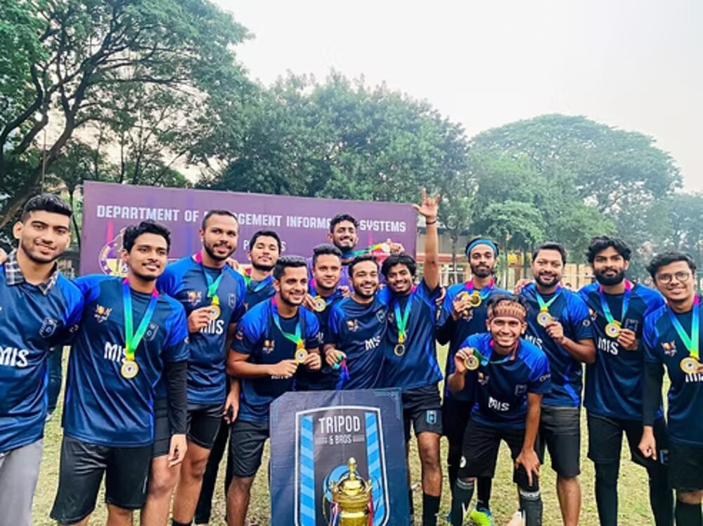

Football is the one thing that has stayed constant since I was a kid. I played through university, still play when work allows, and follow the game closely the rest of the time. I also play Fantasy Premier League every season, which is its own small, ongoing exercise in reading form and data before it turns into an actual result on a Saturday.



The captaincy and organizing side of football is on the leadership page. This one is just the part I do for fun.